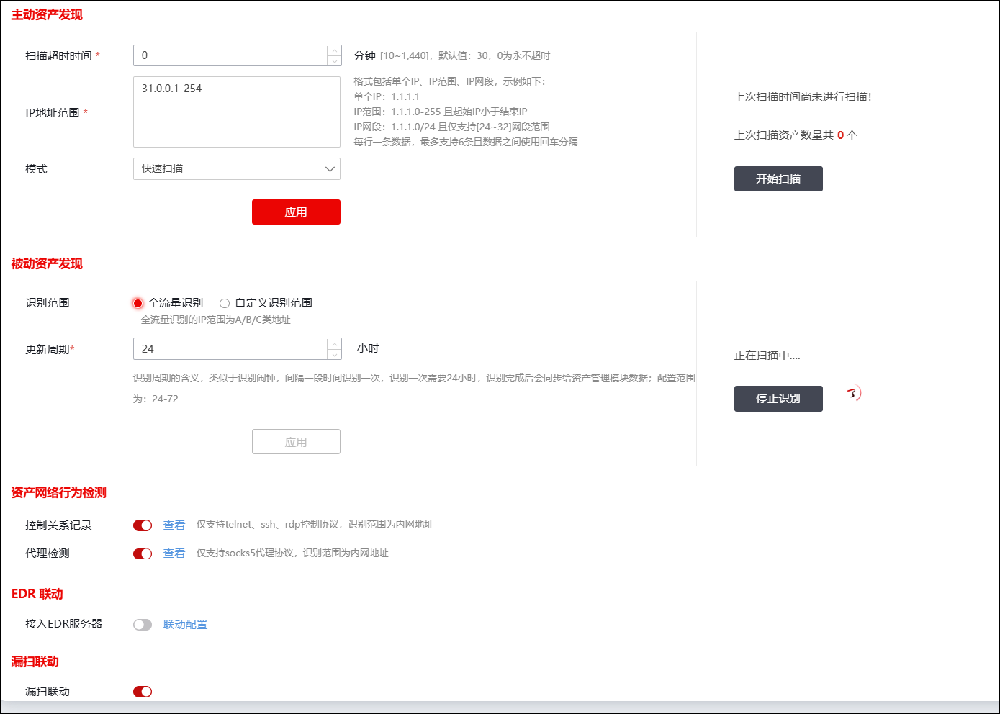
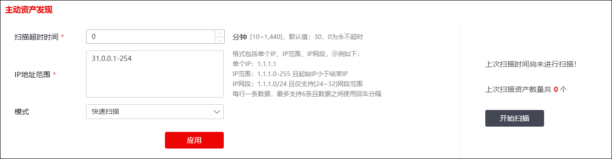
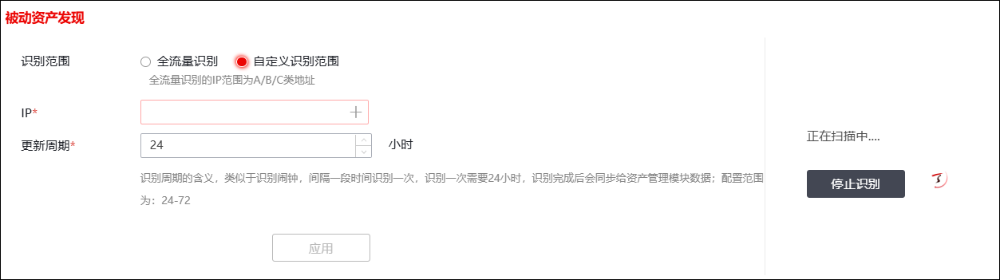
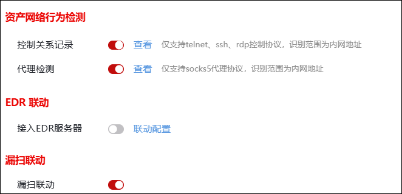

管理员可以在资产发现模块配置主动/被动资产发现策略的相关参数。
·主动资产发现：主动扫描某个网段内的所有资产；
·被动资产发现：被动检测全网/指定地址范围的流量，发现资产。
关于资产扫描模块的相关操作如下：
| 步骤1 | 选择 。 |

| 步骤2 | 主动资产发现。 |

配置扫描任务相关参数，各项参数的具体说明如下表所示。
参数 |
说明 |
|---|---|
扫描超时时间 |
设置扫描超时时间，超过该时间后系统自动停止扫描任务。取值范围：10-1440，单位：分，默认为30分，0表示永不超时。 |
IP地址范围 |
设置扫描范围，支持单个IP、IP范围和IP网段格式。 示例： 单个IP：1.1.1.1。 IP范围：1.1.1.0-255。且起始IP小于结束IP。 IP网段：1.1.1.0/24。且仅支持“24-32”网段范围。 说明：每行一条数据，最多支持6条，且数据之间使用回车分隔。 |
模式 |
设置扫描模式，可选项包括：快速扫描和自定义扫描。 说明： 快速扫描：快速扫描包含端口范围为1-1024以及nmap-services列出的端口（查看方式在/root/.nmap/nmap-services） 自定义扫描：管理员可自定义扫描端口。 |
端口 |
当设置为“自定义扫描”时，需设置扫描端口信息，支持配置单个端口、端口范围。 示例： 单个端口：224。仅支持“0-65535”端口范围。 端口范围：0-65535。且起始端口小于结束端口。 说明：每行一条数据，最多支持6条，且数据之间使用回车分隔。 |
配置完成后，点击【应用】应用当前资产扫描配置。在右侧可查看上次扫描时间及上次扫描资产数量，点击【开始扫描】可启动资产扫描任务。
|
²开始新的扫描任务后，新的扫描结果加入资产列表中；已加入的资产信息不会被覆盖或删除。 |

| 步骤3 | 被动资产发现。 |

配置被动资产发现时，各项参数的具体说明如下表所示。
参数 |
说明 |
|---|---|
识别范围 |
配置被动资产识别范围，可选项：全流量识别、自定义识别范围。 说明： 选择“全流量识别”时，NGFW会识别所有的A/B/C类地址；选择“自定义识别范围”时，需要配置IP地址。 |
IP |
当“识别范围”配置为“自定义识别范围”时需要配置。配置扫描范围，支持单个IP、IP范围和IP网段格式。 示例： 单个IP：1.1.1.1。 IP范围：1.1.1.0-255。且起始IP小于结束IP。 IP网段：1.1.1.0/24。且仅支持“24-32”网段范围。 说明：每行一条数据，最多支持6条，且数据之间使用回车分隔。 |
识别更新周期 |
配置被动识别更新的间隔周期，取值范围：24-72小时。 |
配置完成后，点击【应用】应用当前资产扫描配置。在右侧可查看上次被动资产数量，点击【开始识别】可启动资产扫描任务。
|
²被动资产发现依赖于“资产发现”特征库，没有购买此特征库服务时，该功能不生效。 |

| 步骤4 | 其他配置 |

“资产网络行为检测”模块可以控制是否记录控制关系以及是否启用代理检测，开启两项功能后可以查看对应的记录；“EDR联动”模块可以选择是否开启EDR服务器联动；“漏扫联动”处可以选择是否开启漏扫联动。